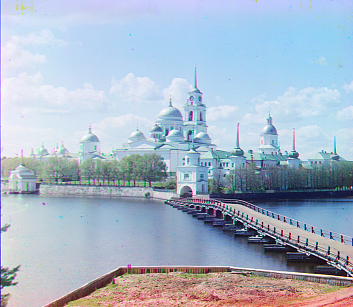

About Me
I'm Leia, like the princess, and I'm an AI founder in healthcare and spiritual tech. I grew up in Lima, Peru and I double major in computer science and economics at UC Berkeley. I love flow state, dancing, experimenting with food, and building with inspiring people.
Part 1: Align Function
Monastery PNG
Reflection
I first crop ~10% off all sides before scoring to suppress plate borders/labels that would
bias NCC. I search a local window (±15 px) and pick the displacement with the highest NCC.
Using R as the reference yields sharper edges and fewer color fringes than using B.
Method: single-scale NCC; border crop = 10%.
Pyramid Function
Self-portrait TIF

A naive pyramid with np.resize produced tiled artifacts. I switched to true resampling
(skimage.transform.rescale with anti-aliasing) and aligned on either raw intensities or
Sobel edges. Edge-based NCC is more stable under exposure differences. After applying the coarse displacement,
a small (±3–4 px) local search refines the result. A final 10–14% crop removes residual color borders.
Method: pyramid NCC (~6–7 levels), anti-aliased resampling; optional Sobel-NCC; border crop = 10–14%.